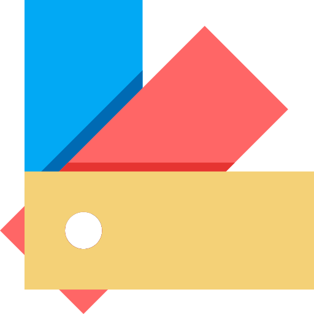
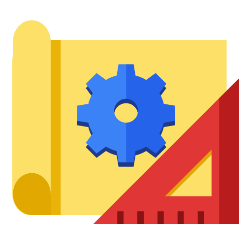

Katalog Tesis
Cek kaitan tesis terdahulu dengan dosen dan kata kunci tiap kelompok keahlian, dari data perpustakaan ITB.

SLR Protocol
Susun systematic literature review secara terstruktur, mulai dari arah riset, taksonomi, hingga PRISMA.

Bengkel Redaksi
Alat bantu teknis penulisan tesis: pilih model/metode, format redaksi LaTeX, dan edit dokumen secara lokal.